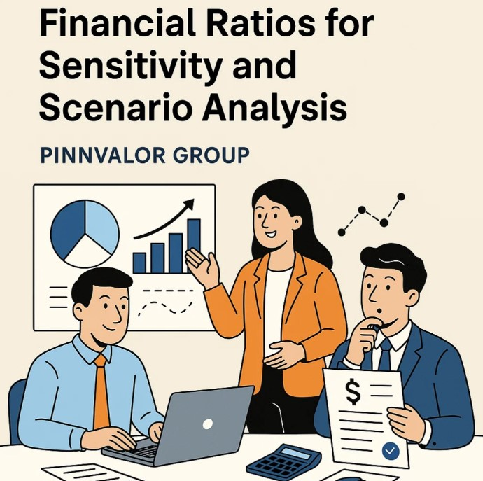

Leveraging Financial Ratios for Sensitivity and Scenario Analysis
In today’s volatile economic environment, robust decision-making is critical for business resilience and strategic growth. Sensitivity and scenario analysis have become indispensable tools in financial planning, risk management, and forecasting. When combined with financial ratios, these techniques can provide deeper insights into a company’s financial health and its response to changing conditions.
What if one small shift in your inputs could drastically impact your bottom line?
One small input change can shift your entire financial picture. Sensitivity analysis helps you see it before it happens.
This blog explores how to leverage financial ratios for effective sensitivity and scenario analysis, offering practical approaches and real-world applications.
What Is Sensitivity and Scenario Analysis?
Sensitivity Analysis
Sensitivity analysis examines how the variation in an output (such as profit or cash flow) can be attributed to different variations in input variables. It helps identify which assumptions or factors have the most impact on financial performance.
Example: How would a 5% increase in the cost of goods sold affect the gross margin ratio?
Scenario Analysis
Scenario analysis evaluates the impact of different hypothetical events or combinations of variables. It’s broader than sensitivity analysis and considers complex interactions among multiple factors.
Example: What happens to return on equity (ROE) under a pessimistic scenario with declining sales and rising interest rates?
Why Use Financial Ratios in These Analyses?
Financial ratios provide a standardized way to evaluate a company’s performance and financial position. When used in sensitivity and scenario analysis, they help:
- Quantify the impact of changing conditions on key performance indicators.
- Compare outcomes across different scenarios.
- Communicate risk and performance clearly to stakeholders.
Key Financial Ratios for Analysis
1. Profitability Ratios
- Gross Margin = (Revenue – COGS) / Revenue
- Net Profit Margin = Net Income / Revenue
- Return on Assets (ROA) = Net Income / Total Assets
- Return on Equity (ROE) = Net Income / Shareholder’s Equity
2. Liquidity Ratios
- Current Ratio = Current Assets / Current Liabilities
- Quick Ratio = (Current Assets – Inventory) / Current Liabilities
3. Leverage Ratios
- Debt-to-Equity Ratio = Total Debt / Total Equity
- Interest Coverage Ratio = EBIT / Interest Expense
4. Efficiency Ratios
- Inventory Turnover = COGS / Average Inventory
- Receivables Turnover = Net Credit Sales / Average Accounts Receivable
Step-by-Step Guide: Performing Sensitivity Analysis Using Ratios
Step 1: Select Key Ratios and Variables
Choose the ratios that are most relevant to your analysis and identify the underlying variables (e.g., revenue, cost of goods sold, operating expenses).
Step 2: Define Assumptions
Create a base-case scenario using historical or projected values.
Step 3: Adjust Inputs One at a Time
Change one input at a time (e.g., increase raw material costs by 10%) and observe how the ratio changes.
Step 4: Analyze and Interpret
Determine which variables the ratios are most sensitive to and assess financial risk accordingly.
Example: If a 10% increase in interest rates drops the Interest Coverage Ratio below 1.5, the company may face a solvency risk.
Scenario Analysis with Financial Ratios: A Practical Framework
Step 1: Define Scenarios
Create multiple scenarios: best-case, base-case, and worst-case. Include combinations of variables (e.g., sales drop, higher inflation, new competition).
Step 2: Project Financial Statements
Estimate income statements and balance sheets under each scenario.
Step 3: Calculate Ratios for Each Scenario
Apply the same financial ratios across all scenarios.
Step 4: Compare and Decide
Assess how ratios change across scenarios. Use these insights to guide strategic decisions such as cost restructuring, pricing, or financing strategies.
Example Use Case: Retail Business
Scenario: A retail company is planning for the next fiscal year. They want to understand how changes in sales and operating expenses affect profitability and leverage.
Base Assumptions:
- Revenue: $10M
- COGS: $6M
- Operating Expenses: $2M
- Interest Expense: $500K
- Total Debt: $3M
- Equity: $5M
Ratios in Base Case:
- Gross Margin = 40%
- Net Profit Margin = 15%
- Interest Coverage Ratio = 3x
- Debt-to-Equity Ratio = 0.6
Sensitivity Case: +10% in Operating Expenses
- Operating Expenses = $2.2M
- Net Profit Margin drops to ~13%
- Interest Coverage drops to 2.7x
Worst-Case Scenario: -15% in Sales + +10% in Expenses
- Revenue: $8.5M
- Net Profit Margin: ~9%
- Interest Coverage: ~2x
- Action: Consider cost-cutting or renegotiating debt terms
Tools and Tips
- Excel / Google Sheets: Ideal for building dynamic sensitivity tables and scenario models.
- Financial Modeling Software: Tools like Quantrix, Planful, or Oracle Hyperion support large-scale enterprise scenario planning.
- Data Visualization: Use charts to present changes in ratios across scenarios for boardroom-ready presentations.
Conclusion
Integrating financial ratios into sensitivity and scenario analysis provides a powerful lens for risk assessment, strategic planning, and performance management. It not only enhances the clarity of your forecasts but also strengthens your organization’s ability to respond to uncertainty with confidence.
By systematically analyzing how ratios behave under different conditions, you can make smarter decisions—before market forces make them for you.